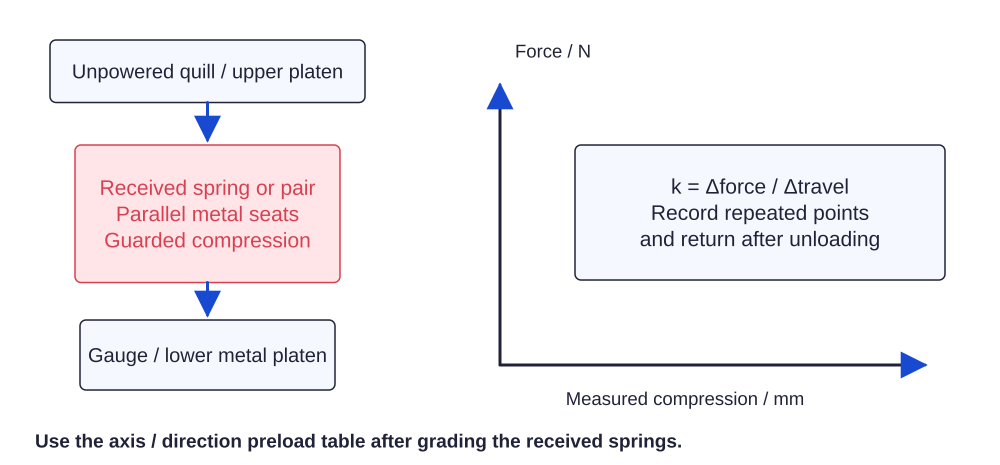

Screw drives / force settings55 / 179
Use the measured force bands by direction
The gravity-bearing directions use different seated preloads. Static trip bands accept the complete force interval; powered values are upper ceilings, with no minimum force requirement.

| Axis / force direction | Pair preload / N | Static trip / N | Powered peak + U / N |
|---|---|---|---|
| X / Y, both signs | 250 | 250–350 | ≤350 |
| Z upward / −screw length | 250 | 250–350 | ≤350 |
| Z downward / +screw length | 400 | 440–500 | ≤500 |
| U yaw / W roll, both signs | 100 | 100–140 | ≤140 |
| V pitch, both signs | 130 | 148–165 | ≤165 |
Ready when
Every link is labeled by axis/direction, and the actual spring-rate, seat, trip and capture records agree with its assigned table row. A reversed Z pair or generic angular setting fails this allocation. Correct the label/spacers and regrade before loading.
Controller +Z moves upward and shortens its screw. Downward gravity is positive screw extension. Angular trip is near ±0.30 mm; XYZ near ±0.75 mm; capture is ±1.0 mm.